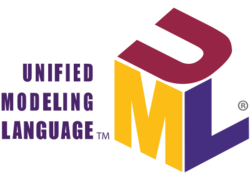

¿QUE SON LOS DIAGRAMAS UML?
Es un lenguaje estandarizado de modelado. Está especialmente desarrollado para ayudar a todos los intervinientes en el desarrollo y modelado de un sistema o un producto software a describir, diseñar, especificar, visualizar, construir y documentar todos los artefactos que lo componen, sirviéndose de varios tipos de diagramas.
Estos diagramas contenidos en UML son la forma más común y más utilizada de modelado de software. Modelar consiste en crear un diseño previo de una aplicación antes de proceder a su desarrollo e implementación, aunque en ocasiones concretas puede hacerse posteriormente. De la misma forma que un arquitecto dibuja y diseña planos sobre el edificio que va a construir, un analista de software (u otros perfiles que cargan con este rol) crea distintos diagramas UML que sirven de base para la posterior construcción/mantenimiento del sistema. El modelado es la principal forma de visualizar el diseño de una aplicación con la finalidad de compararla con los requisitos antes de que el equipo de desarrollo comience a codificar.
El modelado es muy importante en todo tipo de proyectos,
pero se vuelve especialmente importante a medida que aumenta el alcance del
proyecto. Para que una aplicación funcione correctamente, debe estar diseñada
para brindar escalabilidad, seguridad y rendimiento. Con los diagramas UML,
puede visualizar y probar el diseño de un sistema de software antes de que
la implementación del código dificulte y encarezca los cambios.
Estos diagramas UML son representaciones gráficas de las partes
de un sistema de información, ya sea que esté en desarrollo o ya desarrollado.
A menudo están respaldados por varios tipos de documentación. Además, UML no
excluye la posibilidad de diagramas mixtos; de hecho, es bastante común.
Recuerde siempre uno de los lemas de UML: una imagen vale más que mil palabras.
Como mayor inconveniente del tan discutido UML, podemos señalar que es un lenguaje
muy amplio y en ocasiones resulta complicado utilizar todas las posibilidades que
ofrece. Sin embargo, los analistas tienden a utilizar los gráficos de una manera
sencilla que los hace fáciles de entender para cualquiera que acceda a ellos.
A pesar de que cada diagrama UML en particular aporta su visión particular
al modelado, el lenguaje en su conjunto tiene algunas características que interesan :
- ° Es muy sencillo. Pese a que si es usado de forma completa puede llegar a complicarse, lo normal es que se simplifique
- ° Es capaz de modelar todo tipo de sistemas.
- ° Es un lenguaje universal, haciendo que todos los miembros del equipo se relacionen a través de sus diagramas sean del ámbito que sean.
- ° Es fácilmente extensible. Tiene mecanismos sencillos para especializar los conceptos fundamentales.
- ° Es visual y, por lo tanto, intuitivo.
- ° Es independiente del desarrollo, del lenguaje y de la plataforma.
- ° Bien ejecutado aporta un conjunto considerable de buenas prácticas.
- ° No está completo. Utilizando los distintos diagramas no podemos estar seguros de comprender con totalidad el sistema que va a desarrollarse.